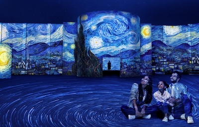

CONTENIDOS DIGITALES
Os presento mi Galería Digital que os va a mostrar vida y obra de algunos de mis pintores favoritos de todas las épocas: Van Gogh, Velázquez y Bansky. Para iniciar esta Galería Digital, comienzo mostrando vida y obra de estos pintores.
-
Vincent Van Gogh
-
Diego Velázquez
-
Bansky